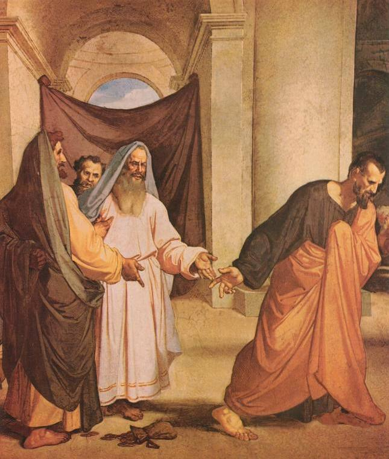

Judas
Judas version 1.4, beta 1.
Hallelujamusik track 01.
Musik og tekst er skrevet og indspillet 1992
-> 2014-11-07
af
Lasse Steen Bohnstedt.
Visse rettigheder forbeholdt. *)
Judas grubler i natten.
Audio
Judas, beta 1:
Judas, beta 1
Judas-(1-4-7-1).mp3
true
O5JAB-Hy1Ks
3.36
Judas-1.3.pdf
Judas-1-4-tekst.txt
Bemærk
: Filen med noderne og akkorderne passer til en ældre version, hvor teksten er anderledes. Og der står en ikke længere eksisterende web-adresse forneden.Tekst
|
 Judas og de 30 sølvpenge |
Du sagde "følg mig!", og vi stak af fra det liv,
som ingen mening har.
Og når du talte, så stemte Himlen i med halleluja-råb.
Det var som om, du lovede os alt; vi fik endnu engang håb.
Og hvor vi end kom, slugte folk råt, hvad end du sagde.
I går tog vi bjerget, og vi kunne have vundet Verden i dag.
Men du talte i timevis; og hvad du vil er ikke godt at vide.
Mens dagene de går, er der stadig ikke sket en skid.
Her sidder jeg, din flok er væk, og ilden er død.
Guds sol står op, og jeg kan se mit liv gå ned.
En ørkenvandring forbi. Al magi forsvandt med dig.
Hvis bare, i det mindste, du kunne have hadet mig.
Trivia
Linien med Bjerget kontra Verden
stammer fra
Ride Across the River med Dire Straits.
Men den handler selvfølgelig
også om Bjergprædikenen.
Tanker
Her under er der links til flere oplysninger
om processen,
der førte til nuværende udgave af "Judas":
Baggrund
Denne tanke skrev jeg i 2009
(der er rettet og tilføjet et par ord medio 2015):
Judas sidder og tænker over det, han har gjort. Vreden er væk. Nu er der kun et tomrum uden følelser.
Judas Iskariot er en af de apostle, der er klarest defineret i forhold til Jesus; og på en måde er han også den, der klarest definerer Jesus. Men alligevel ved vi praktisk taget intet om ham.
...
Judas sidder og tænker over det, han har gjort. Vreden er væk. Nu er der kun et tomrum uden følelser.
Judas Iskariot er en af de apostle, der er klarest defineret i forhold til Jesus; og på en måde er han også den, der klarest definerer Jesus. Men alligevel ved vi praktisk taget intet om ham.
...
Fortsættelse
Du kan læse
videre her.
Historik
Sangen om Judas har været
en del af mit liv i over 20 år.
Det gør det svært at sammenfatte kort,
hvordan forløbet har været,
og hvilke tanker jeg har gjort mig undervejs.
Men jeg har gjort et forsøg:
Men jeg har gjort et forsøg:
Mange år: Sangskrivning kan være underlig
Jeg vågnede med et brøl klokken 5 om morgenen,
efter kun to timers søvn,
og havde en melodirundgang incl. tekst
spillende for fuld volumen i hjernen.
Og mine sanser brændte med følelsen fra drømmen: Jeg var fuld af gru og følte en voldsom tyngde over mig, og jeg hulkede; for Jesus var jo død!
I min søvndrukne tilstand var jeg opfyldt af følelsen af, at jeg havde vandret med Jesus og var en af hans disciple. Og nu var vores Mester død, og alt var kaos.
Dét var ret underligt, for jeg var slet ikke religiøs. Men der gik mange minutter, før jeg var kommet så meget til mig selv, at jeg begyndte at undre mig...
...
Og mine sanser brændte med følelsen fra drømmen: Jeg var fuld af gru og følte en voldsom tyngde over mig, og jeg hulkede; for Jesus var jo død!
I min søvndrukne tilstand var jeg opfyldt af følelsen af, at jeg havde vandret med Jesus og var en af hans disciple. Og nu var vores Mester død, og alt var kaos.
Dét var ret underligt, for jeg var slet ikke religiøs. Men der gik mange minutter, før jeg var kommet så meget til mig selv, at jeg begyndte at undre mig...
...
Fortsættelse
Læs
videre her.
2015-10-02
"Judas" version 1.4, beta 1